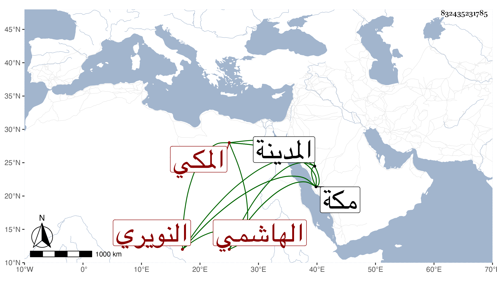

0902Sakhawi.DawLamic.ITO20230111-ara1.EIS1600.832435231785
Biography ID: 832435231785
265
زينب ابنة القاضي الكمال أبي الفضل محمد بن أحمد بن عبد العزيز أم السعد الهاشمي النويري المكي أمها أم الحسين ابنة القاضي شهاب الدين الطبري . ولدت سنة خمس وستين وسبعمائة بمكة وسمعت من الكمال بن حبيب ، وأجاز لها الصلاح ابن أبي عمر بن اميلة وابن النجم وآخرون واحتفلت أمها بجهازها جدا وتزوجها وهي بكر المحب محمد بن أحمد بن الرضى الطبري ثم فارقها بعد أن ولدت له ابنة ، وتزوجها عبد الرحمن بن العفيف اليافعي ثم فارقها بعد أشهر وهي حامل فولدت له أم الحسين وتزوجها الجمال بن ظهيرة فولدت له ومات معها . وكانت رئيسة عاقلة تقرأ القرآن وتذاكر بأخبار وأشعار حسنة وزارت المدينة مرارا وكانت ناظرة على أوقاف والدتها . ماتت بمكة في ربيع الأول سنة ثلاث وعشرين . ذكرها الفاسي وقال إنها أخت والدته لابيها رحمها الله .
